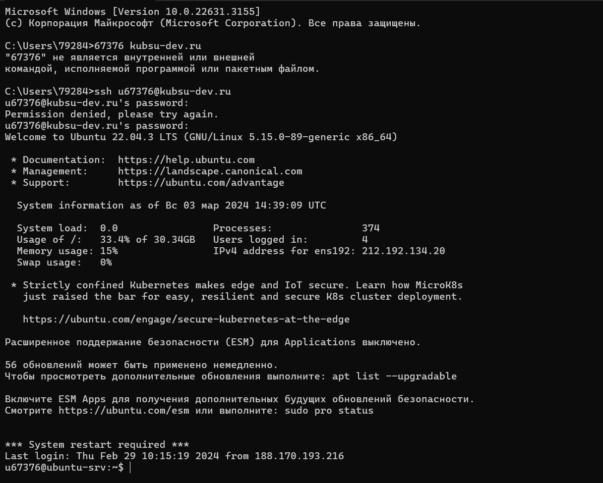
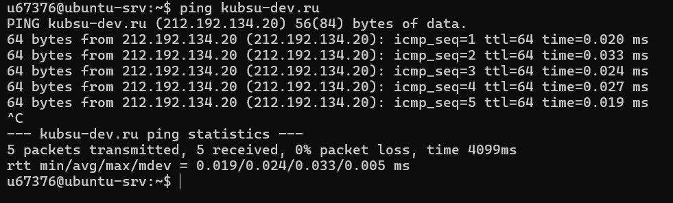
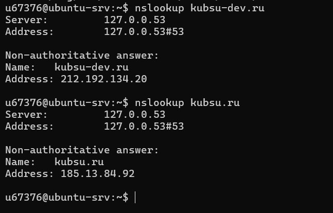
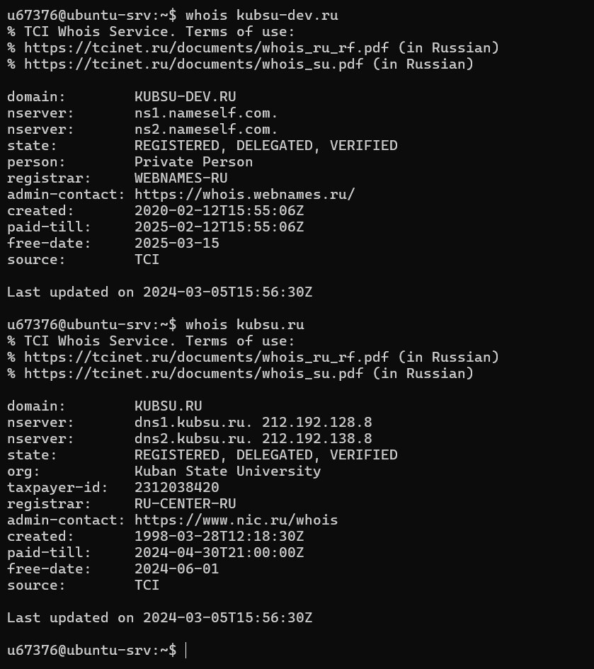
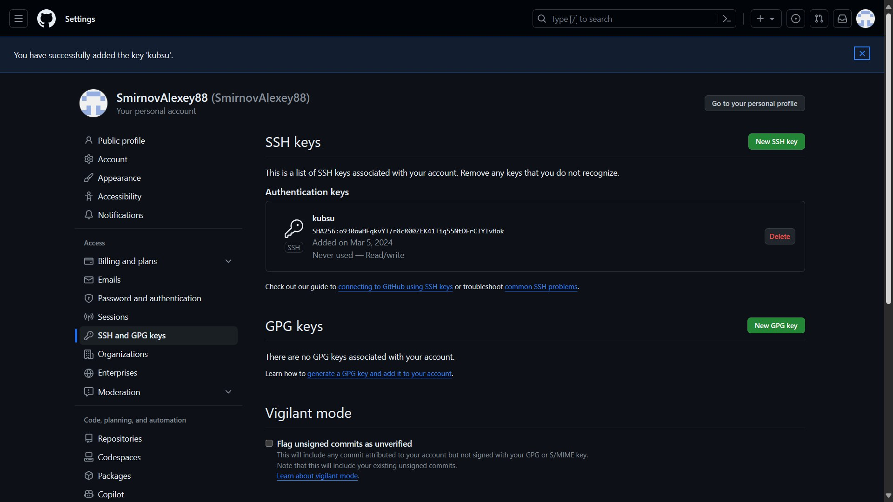
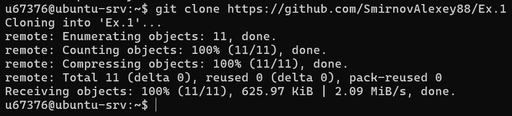
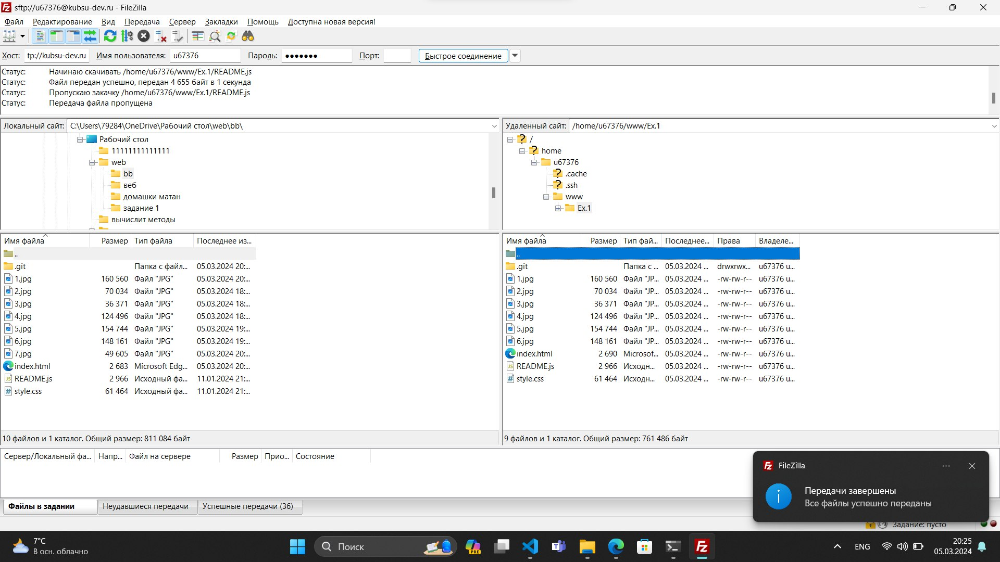

Выполнил подлкючение к серверу через терминал, используя команду ssh логин@kubsu-dev.ru
С помощью команды ping узнал IP-адресс сервра
С помощью команды nslookup узнал A-записи и MX-записи домена kubsu.ru и kubsu-dev.ru
С помощью команды whois узнал дату регистрации домена kubsu.ru и kubsu- dev.ru
с помощью команды ssh-keygen -t rsa сгенерировал ssh-ключ
и поместил его в каталог с адресом (/home/u67375/.ssh/id_rsa)
Затем получил ключи с помощью команды cat ~/.ssh/id_rsa.pub
Добваляем ssh-ключ на github
с помощью команды git clone скопировал репозиторий на сервер
Подключился через FileZilla и скопировал файлы с сервера на свой компьютер
